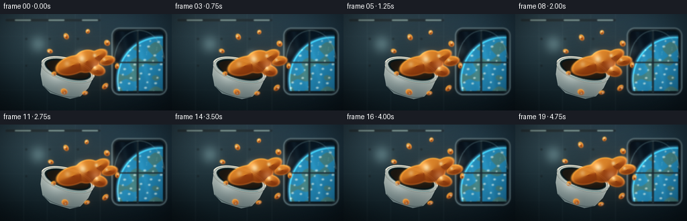
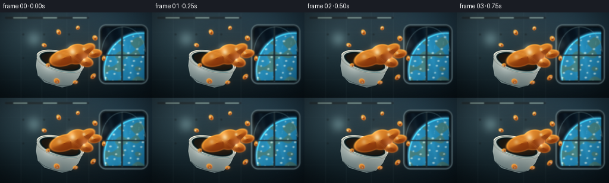

CODING AGENTS AS PIXEL WORLD MODELS
traex/DeepSeek-V4.1-Flash · mechanics_0000
点击播放 · 原生 RGB 像素
逐轮保存的候选
回放视频、检查图与代码变化。
每份候选均可单独播放。实际图片检查记录在下方工具轨迹中。
候选 01播放与检查图
点击播放 · 原生 RGB 像素


展开代码变化
--- 上一保存版本
+++ 本次保存版本
@@ -0,0 +1,439 @@
+from pathlib import Path
+
+import numpy as np
+from PIL import Image, ImageDraw, ImageFilter
+from scipy.ndimage import gaussian_filter
+
+import artifact_io
+
+
+W, H = 256, 144
+FRAMES = 20
+FPS = 4.0
+S = 4
+RW, RH = W * S, H * S
+RNG = np.random.default_rng(23)
+
+
+def smoothstep(edge0, edge1, x):
+ t = np.clip((x - edge0) / (edge1 - edge0), 0.0, 1.0)
+ return t * t * (3.0 - 2.0 * t)
+
+
+def mix(a, b, t):
+ return a * (1.0 - t) + b * t
+
+
+def rounded_mask(w, h, radius):
+ mask = Image.new("L", (w, h), 0)
+ draw = ImageDraw.Draw(mask)
+ draw.rounded_rectangle((0, 0, w - 1, h - 1), radius=radius, fill=255)
+ return np.asarray(mask, dtype=np.float32) / 255.0
+
+
+def color(rgb):
+ return np.array(rgb, dtype=np.float32)
+
+
+def add_glow(rgb, x, y, radius, tint, strength):
+ yy, xx = np.mgrid[0:RH, 0:RW]
+ falloff = np.exp(-((xx - x) ** 2 + (yy - y) ** 2) / (2.0 * radius * radius))
+ rgb += falloff[..., None] * color(tint) * strength
+
+
+def make_background():
+ yy, xx = np.mgrid[0:RH, 0:RW]
+ yn = yy / (RH - 1)
+ xn = xx / (RW - 1)
+
+ top = color((24, 39, 49))
+ bottom = color((8, 15, 20))
+ rgb = mix(top[None, None, :], bottom[None, None, :], smoothstep(0.0, 1.0, yn)[..., None])
+ rgb = np.broadcast_to(rgb, (RH, RW, 3)).copy()
+
+ # Broad cabin lights keep the metal wall readable without flattening it.
+ add_glow(rgb, RW * 0.24, -RH * 0.08, RW * 0.34, (75, 96, 100), 0.16)
+ add_glow(rgb, RW * 0.08, RH * 0.44, RW * 0.23, (39, 95, 105), 0.12)
+ add_glow(rgb, RW * 0.77, RH * 0.12, RW * 0.26, (70, 111, 125), 0.11)
+
+ image = Image.fromarray(np.clip(rgb, 0, 255).astype(np.uint8), "RGB")
+ draw = ImageDraw.Draw(image, "RGBA")
+
+ # Wall panel seams and subtle inset hardware.
+ seam = (88, 115, 121, 38)
+ hi = (155, 183, 181, 24)
+ for x in (35, 70, 112, 149):
+ draw.line((x * S, 0, x * S, RH), fill=seam, width=max(1, S // 2))
+ draw.line(((x * S) + 2, 0, (x * S) + 2, RH), fill=hi, width=1)
+ for y in (33, 73, 113):
+ draw.line((0, y * S, 158 * S, y * S), fill=(75, 96, 104, 28), width=1)
+ draw.line((0, (y * S) + 2, 158 * S, (y * S) + 2), fill=(145, 169, 168, 14), width=1)
+
+ for x, y in ((39, 37), (39, 77), (74, 37), (74, 77), (116, 37), (116, 77)):
+ draw.ellipse(
+ (x * S - 2 * S, y * S - 2 * S, x * S + 2 * S, y * S + 2 * S),
+ fill=(9, 16, 20, 95),
+ outline=(112, 133, 134, 42),
+ width=1,
+ )
+
+ # Overhead rail and cool work lights.
+ draw.rounded_rectangle(
+ (8 * S, 7 * S, 150 * S, 11 * S),
+ radius=2 * S,
+ fill=(31, 43, 49, 230),
+ outline=(98, 119, 121, 65),
+ width=1,
+ )
+ for x in (22, 72, 122):
+ draw.rounded_rectangle(
+ (x * S, 8 * S, (x + 24) * S, 10 * S),
+ radius=S,
+ fill=(178, 214, 207, 155),
+ )
+ strip = np.zeros((RH, RW, 3), dtype=np.float32)
+ for x in (34, 84, 134):
+ add_glow(strip, x * S, 11 * S, 19 * S, (155, 220, 218), 0.11)
+ rgb = np.asarray(image, dtype=np.float32) + strip
+
+ # A large station window with the Earth beyond it.
+ outer = (166 * S, 20 * S, 249 * S, 121 * S)
+ draw = ImageDraw.Draw(image, "RGBA")
+ draw.rounded_rectangle(outer, radius=12 * S, fill=(24, 34, 41, 255), outline=(92, 112, 118, 235), width=2 * S)
+ draw.rounded_rectangle(
+ (170 * S, 24 * S, 245 * S, 117 * S),
+ radius=9 * S,
+ fill=(3, 10, 18, 255),
+ outline=(7, 13, 17, 255),
+ width=2 * S,
+ )
+
+ win_x0, win_y0, win_x1, win_y1 = 172 * S, 26 * S, 243 * S, 115 * S
+ ww, wh = win_x1 - win_x0, win_y1 - win_y0
+ wy, wx = np.mgrid[0:wh, 0:ww]
+ wxn = wx / (ww - 1)
+ wyn = wy / (wh - 1)
+ space = mix(
+ color((3, 10, 20))[None, None, :],
+ color((6, 22, 34))[None, None, :],
+ smoothstep(0, 1, wxn)[..., None],
+ )
+ space = np.broadcast_to(space, (wh, ww, 3)).copy()
+
+ # Earth's limb, ocean bands, and cloud arcs.
+ cx, cy, radius = ww * 0.94, wh * 0.81, wh * 0.72
+ dx = (wx - cx) / radius
+ dy = (wy - cy) / radius
+ rr = np.sqrt(dx * dx + dy * dy)
+ earth = rr < 1.0
+ light = np.clip(0.86 - 0.43 * dx - 0.36 * dy, 0.0, 1.2)
+ ocean = mix(color((8, 48, 77)), color((30, 117, 157)), light[..., None])
+ ocean = np.clip(ocean + (0.08 * np.sin(wy * 0.10 + wx * 0.025))[..., None], 0, 255)
+ continents = (
+ (np.sin(wx * 0.055 + 1.3) + np.cos(wy * 0.072 - 0.8) + np.sin((wx + wy) * 0.023)) > 0.70
+ )
+ land = np.zeros_like(ocean)
+ land[:] = color((91, 108, 70))
+ ocean = np.where(continents[..., None], ocean * 0.48 + land * 0.52, ocean)
+ clouds = (
+ np.sin(wx * 0.12 + wy * 0.034)
+ + 0.55 * np.cos(wx * 0.037 - wy * 0.15)
+ + 0.35 * np.sin(wy * 0.23)
+ )
+ cloud_a = smoothstep(1.10, 1.55, clouds) * 0.68
+ ocean = mix(ocean, np.broadcast_to(color((221, 233, 225)), ocean.shape), cloud_a[..., None])
+ space = np.where(earth[..., None], ocean, space)
+
+ atmosphere = np.exp(-((rr - 1.0) / 0.035) ** 2) * (rr >= 0.97)
+ space += atmosphere[..., None] * color((69, 168, 210)) * 0.65
+
+ star_rng = np.random.default_rng(12)
+ for _ in range(34):
+ sx = int(star_rng.integers(2, ww - 2))
+ sy = int(star_rng.integers(2, wh - 2))
+ if rr[sy, sx] < 1.04:
+ continue
+ b = int(star_rng.integers(95, 210))
+ space[max(0, sy - 1):sy + 1, max(0, sx - 1):sx + 1] += np.array((b * 0.55, b * 0.72, b), dtype=np.float32)
+
+ glass = np.zeros((wh, ww, 3), dtype=np.float32)
+ for band_x in (ww * 0.30, ww * 0.58):
+ centerline = band_x + (wy - wh * 0.5) * 0.26
+ band = np.exp(-((wx - centerline) / (ww * 0.055)) ** 2)
+ glass += band[..., None] * color((105, 181, 194)) * 0.055
+ space = np.clip(space + glass, 0, 255).astype(np.uint8)
+ image.paste(Image.fromarray(space, "RGB"), (win_x0, win_y0))
+
+ # Window mullions and a bright cold inner rim.
+ draw = ImageDraw.Draw(image, "RGBA")
+ draw.line((205 * S, 24 * S, 205 * S, 117 * S), fill=(24, 34, 40, 245), width=3 * S)
+ draw.line((205 * S + 2, 24 * S, 205 * S + 2, 117 * S), fill=(125, 158, 162, 90), width=1)
+ draw.line((170 * S, 72 * S, 245 * S, 72 * S), fill=(24, 34, 40, 238), width=2 * S)
+ draw.arc((170 * S, 24 * S, 245 * S, 117 * S), 185, 355, fill=(146, 188, 191, 110), width=S)
+
+ # A restrained halo from the window and warm cabin light.
+ rgb = np.asarray(image, dtype=np.float32)
+ add_glow(rgb, 208 * S, 75 * S, 62 * S, (45, 123, 151), 0.075)
+ add_glow(rgb, 51 * S, 30 * S, 48 * S, (255, 192, 120), 0.035)
+
+ # Slight defocus and vignette make the floating bowl the focal point.
+ rgb = gaussian_filter(rgb, sigma=(0.75 * S, 0.75 * S, 0.0))
+ vignette = 1.0 - 0.29 * smoothstep(0.44, 0.88, np.sqrt(((xx / RW - 0.5) * 1.25) ** 2 + (yy / RH - 0.5) ** 2))
+ rgb *= vignette[..., None]
+ return rgb
+
+
+def bowl_layer(angle_deg):
+ lw, lh = 440, 340
+ cx, cy = 220, 120
+ yy, xx = np.mgrid[0:lh, 0:lw]
+
+ body_mask_img = Image.new("L", (lw, lh), 0)
+ d = ImageDraw.Draw(body_mask_img)
+ d.ellipse((cx - 164, cy - 68, cx + 164, cy + 68), fill=255)
+ d.polygon(
+ (
+ (cx - 160, cy),
+ (cx - 148, cy + 72),
+ (cx - 118, cy + 132),
+ (cx - 62, cy + 164),
+ (cx + 62, cy + 164),
+ (cx + 118, cy + 132),
+ (cx + 148, cy + 72),
+ (cx + 160, cy),
+ ),
+ fill=255,
+ )
+ body_mask = np.asarray(body_mask_img, dtype=np.float32) / 255.0
+
+ # Ceramic body shading: warm top rim, cool lower shell, and soft side occlusion.
+ depth = np.clip((yy - cy + 62) / 230.0, 0.0, 1.0)
+ radial = np.clip((xx - cx) / 170.0, -1.0, 1.0)
+ ceramic = mix(color((214, 218, 208)), color((108, 127, 129)), depth[..., None])
+ ceramic *= (1.0 - 0.14 * smoothstep(0.15, 1.0, depth) * (0.5 + 0.5 * radial))[..., None]
+ ceramic += (np.exp(-((xx - (cx - 58)) ** 2 + (yy - (cy + 45)) ** 2) / (2 * 40 ** 2)) * 32)[..., None]
+
+ rim_shadow = np.exp(-((np.sqrt(((xx - cx) / 164.0) ** 2 + ((yy - cy) / 68.0) ** 2) - 1.0) / 0.035) ** 2)
+ ceramic *= (1.0 - 0.22 * rim_shadow)[..., None]
+
+ alpha = body_mask.copy()
+ rgba = np.zeros((lh, lw, 4), dtype=np.float32)
+ rgba[..., :3] = np.clip(ceramic, 0, 255)
+ rgba[..., 3] = alpha * 255.0
+
+ layer = Image.fromarray(rgba.astype(np.uint8), "RGBA")
+ d = ImageDraw.Draw(layer, "RGBA")
+
+ # Mouth and interior shadow.
+ d.ellipse((cx - 143, cy - 55, cx + 143, cy + 55), fill=(31, 49, 48, 255))
+ d.ellipse((cx - 137, cy - 50, cx + 137, cy + 50), fill=(10, 23, 26, 255))
+ d.ellipse((cx - 128, cy - 43, cx + 128, cy + 43), fill=(28, 24, 18, 255))
+
+ # Rim bands and a restrained blue station-light reflection.
+ d.arc((cx - 164, cy - 68, cx + 164, cy + 68), 184, 356, fill=(239, 235, 218, 245), width=7)
+ d.arc((cx - 155, cy - 63, cx + 155, cy + 63), 187, 353, fill=(154, 166, 157, 205), width=4)
+ d.arc((cx - 143, cy - 55, cx + 143, cy + 55), 12, 169, fill=(74, 93, 91, 230), width=5)
+ d.arc((cx - 158, cy - 63, cx + 158, cy + 63), 36, 124, fill=(114, 194, 200, 145), width=3)
+ d.arc((cx - 120, cy + 72, cx + 120, cy + 160), 24, 158, fill=(194, 208, 198, 70), width=3)
+
+ # Outer edge and a few tiny glaze chips keep the ceramic from looking plastic.
+ d.arc((cx - 164, cy - 68, cx + 164, cy + 68), 2, 178, fill=(50, 65, 66, 120), width=2)
+ d.line((cx - 150, cy + 72, cx - 120, cy + 132), fill=(59, 74, 74, 95), width=2)
+ d.line((cx + 150, cy + 72, cx + 120, cy + 132), fill=(59, 74, 74, 85), width=2)
+
+ return layer.rotate(angle_deg, resample=Image.Resampling.BICUBIC, center=(cx, cy))
+
+
+def front_rim_layer(angle_deg):
+ lw, lh = 440, 340
+ cx, cy = 220, 120
+ layer = Image.new("RGBA", (lw, lh), (0, 0, 0, 0))
+ d = ImageDraw.Draw(layer, "RGBA")
+ d.arc((cx - 164, cy - 68, cx + 164, cy + 68), 12, 168, fill=(213, 216, 203, 190), width=6)
+ d.arc((cx - 161, cy - 65, cx + 161, cy + 65), 20, 160, fill=(111, 140, 139, 120), width=2)
+ return layer.rotate(angle_deg, resample=Image.Resampling.BICUBIC, center=(cx, cy))
+
+
+def ellipse_sdf(xx, yy, cx, cy, rx, ry, angle=0.0):
+ ca, sa = np.cos(angle), np.sin(angle)
+ dx, dy = xx - cx, yy - cy
+ ex = ca * dx + sa * dy
+ ey = -sa * dx + ca * dy
+ q = np.sqrt((ex / rx) ** 2 + (ey / ry) ** 2)
+ return (q - 1.0) * min(rx, ry)
+
+
+def smin(a, b, k):
+ h = np.clip(0.5 + 0.5 * (b - a) / k, 0.0, 1.0)
+ return mix(b, a, h) - k * h * (1.0 - h)
+
+
+def soup_shapes(t):
+ ease = t * (0.34 + 0.66 * t)
+ anchor = np.array((119.0 + 0.8 * np.sin(t * 2.4), 72.0 + 1.3 * np.sin(t * 4.8 + 0.2)))
+ shapes = []
+
+ # Liquid still cupped in the bowl.
+ shapes.append((anchor[0] - 11.0, anchor[1] + 4.0, 26.0, 14.0, -0.28, 0.42))
+ # Main bulge and its soft tendrils leaving the tilted rim.
+ shapes.append((anchor[0] + 10.0 + 2.2 * ease, anchor[1] - 2.0 - 1.0 * ease, 20.0 + 2.5 * ease, 17.0 + 1.5 * ease, -0.30, 0.82))
+ shapes.append((anchor[0] + 27.0 + 5.0 * ease, anchor[1] - 10.0 - 2.4 * ease, 15.0 + 1.0 * ease, 9.0 + 0.7 * ease, -0.48, 0.80))
+ shapes.append((anchor[0] + 25.0 + 5.0 * ease, anchor[1] + 11.0 + 2.2 * ease, 13.0 + 0.8 * ease, 8.5 + 0.5 * ease, 0.25, 0.76))
+ shapes.append((anchor[0] + 40.0 + 7.0 * ease, anchor[1] - 3.0 - 0.8 * ease, 12.5 + 0.7 * ease, 7.4 + 0.4 * ease, -0.15, 0.74))
+
+ droplets = [
+ (-161, 47.0, 4.4, 0.12, 0.8),
+ (-120, 43.0, 5.0, 0.20, 1.4),
+ (-78, 47.0, 3.6, 0.22, 2.1),
+ (-38, 49.0, 4.4, 0.18, 1.0),
+ (4, 55.0, 3.5, 0.16, 2.5),
+ (42, 51.0, 4.1, 0.19, 0.5),
+ (78, 45.0, 3.4, 0.20, 1.8),
+ (118, 49.0, 4.7, 0.17, 2.9),
+ (156, 42.0, 3.8, 0.15, 0.2),
+ ]
+ for i, (deg, dist, radius, drift, phase) in enumerate(droplets):
+ theta = np.deg2rad(deg + 2.5 * np.sin(t * 4.2 + phase) + 3.0 * t)
+ distance = dist + drift * 15.0 * ease + 1.2 * np.sin(t * 5.0 + phase)
+ px = anchor[0] + np.cos(theta) * distance
+ py = anchor[1] + np.sin(theta) * distance
+ stretch = 1.0 + 0.28 * np.sin(theta + 0.8)
+ rx = radius * stretch
+ ry = radius / (0.98 + 0.10 * stretch)
+ shapes.append((px, py, rx, ry, theta + np.pi / 2.0, 0.95 - 0.025 * i))
+ return shapes
+
+
+def render_soup(t):
+ yy, xx = np.mgrid[0:RH, 0:RW]
+ shapes = soup_shapes(t)
+ d = np.full((RH, RW), 1.0e6, dtype=np.float32)
+ for cx, cy, rx, ry, angle, _ in shapes:
+ sdf = ellipse_sdf(xx, yy, cx * S, cy * S, rx * S, ry * S, angle)
+ d = smin(d, sdf, 2.0 * S)
+
+ edge_soft = 1.35 * S
+ alpha = 1.0 - smoothstep(-edge_soft, edge_soft, d)
+ alpha = np.clip(alpha * 0.96, 0.0, 1.0)
+
+ # Pseudo-normal from the distance field, used for warm and cool rim lighting.
+ gy, gx = np.gradient(gaussian_filter(d, sigma=1.0 * S))
+ mag = np.sqrt(gx * gx + gy * gy) + 1.0e-5
+ nx, ny = gx / mag, gy / mag
+ warm_light = np.clip(-0.52 * nx - 0.82 * ny, -1.0, 1.0)
+ cool_light = np.clip(0.70 * nx - 0.10 * ny, 0.0, 1.0)
+
+ vertical = np.clip((yy / RH - 0.24) / 0.66, 0.0, 1.0)
+ base = mix(color((118, 35, 9)), color((238, 131, 29)), (0.66 - 0.28 * vertical + 0.20 * warm_light)[..., None])
+ base = mix(base, color((255, 197, 83)), (0.16 + 0.20 * warm_light[..., None]).clip(0, 0.30))
+
+ rim = np.exp(-((np.abs(d) / (1.55 * S)) ** 2))
+ base += rim[..., None] * color((255, 196, 92)) * 0.24
+ base += rim[..., None] * color((67, 164, 183)) * (cool_light[..., None] * 0.13)
+
+ spec = np.zeros((RH, RW), dtype=np.float32)
+ for cx, cy, rx, ry, angle, strength in shapes:
+ ca, sa = np.cos(angle), np.sin(angle)
+ hx = cx * S - ca * rx * S * 0.28 + sa * ry * S * 0.32
+ hy = cy * S - sa * rx * S * 0.28 - ca * ry * S * 0.32
+ sigma = max(1.2 * S, min(rx, ry) * S * 0.20)
+ spec += np.exp(-((xx - hx) ** 2 + (yy - hy) ** 2) / (2 * sigma * sigma)) * strength
+ spec = np.clip(spec, 0.0, 1.0) * alpha
+ base = mix(base, color((255, 245, 205)), (spec * 0.78)[..., None])
+
+ # A darker underside gives the free-floating liquid visible volume.
+ underside = smoothstep(0.35, 0.92, np.clip(ny, 0.0, 1.0)) * np.exp(-np.abs(d) / (8.0 * S))
+ base *= (1.0 - 0.18 * underside)[..., None]
+ base = np.clip(base, 0, 255)
+
+ glow = gaussian_filter(alpha, sigma=4.0 * S)
+ return base, alpha, glow
+
+
+def composite_rgba(base, overlay, alpha):
+ a = alpha[..., None]
+ return base * (1.0 - a) + overlay * a
+
+
+def render_frame(background, t):
+ frame = background.copy()
+ yy, xx = np.mgrid[0:RH, 0:RW]
+
+ # Soft ambient bounce under the floating bowl and around the soup.
+ add_glow(frame, 99 * S, 99 * S, 42 * S, (31, 74, 81), 0.10)
+ add_glow(frame, 142 * S, 70 * S, 33 * S, (255, 135, 37), 0.055)
+
+ # Sparse dust catches the cabin lights and reinforces the zero-g setting.
+ dust = np.zeros((RH, RW, 3), dtype=np.float32)
+ dust_rng = np.random.default_rng(77)
+ for i in range(24):
+ bx = dust_rng.uniform(18, 245) * S
+ by = dust_rng.uniform(16, 132) * S
+ amp = dust_rng.uniform(0.3, 1.2) * S
+ phase = dust_rng.uniform(0, 6.28)
+ px = bx + (t * (4 + i % 5) * S) + np.sin(t * 5.0 + phase) * 1.5 * S
+ py = by + np.cos(t * 3.2 + phase) * 1.8 * S
+ sx = int(px) % RW
+ sy = int(py) % RH
+ x0, x1 = max(0, sx - 2), min(RW, sx + 3)
+ y0, y1 = max(0, sy - 2), min(RH, sy + 3)
+ dust[y0:y1, x0:x1] += color((123, 184, 188)) * (0.018 * amp)
+ frame = np.clip(frame + gaussian_filter(dust, sigma=(1.2 * S, 1.2 * S, 0.0)), 0, 255)
+
+ bob = 1.3 * np.sin(2 * np.pi * (0.72 * t + 0.08))
+ angle = -17.0 + 1.15 * np.sin(2 * np.pi * (0.55 * t + 0.13))
+ bowl_cx, bowl_cy = 101.0, 82.0 + bob
+ lcx, lcy = 220, 120
+ paste_x = int(round(bowl_cx * S - lcx))
+ paste_y = int(round(bowl_cy * S - lcy))
+
+ bowl = bowl_layer(angle)
+ frame_img = Image.fromarray(np.clip(frame, 0, 255).astype(np.uint8), "RGB")
+ frame_img.paste(bowl, (paste_x, paste_y), bowl)
+
+ soup_rgb, soup_alpha, soup_glow = render_soup(t)
+ frame = np.asarray(frame_img, dtype=np.float32)
+ frame += soup_glow[..., None] * color((255, 119, 29)) * 0.18
+ frame = composite_rgba(frame, soup_rgb, soup_alpha)
+ frame_img = Image.fromarray(np.clip(frame, 0, 255).astype(np.uint8), "RGB")
+
+ front = front_rim_layer(angle)
+ frame_img.paste(front, (paste_x, paste_y), front)
+ frame = np.asarray(frame_img, dtype=np.float32)
+
+ # Small high-energy glints from the window and overhead strips.
+ highlights = np.zeros((RH, RW, 3), dtype=np.float32)
+ for x, y, radius, strength in (
+ (57 * S, 45 * S, 9 * S, 0.20),
+ (119 * S, 60 * S, 5 * S, 0.16),
+ (143 * S, 76 * S, 5 * S, 0.18),
+ (174 * S, 54 * S, 7 * S, 0.12),
+ ):
+ g = np.exp(-((xx - x) ** 2 + (yy - y) ** 2) / (2 * radius * radius))
+ highlights += g[..., None] * color((206, 244, 235)) * strength
+ frame += highlights
+
+ # Gentle final grade and a little sensor grain.
+ frame = np.clip(frame, 0, 255)
+ frame = 255.0 * np.power(frame / 255.0, 1.035)
+ grain_rng = np.random.default_rng(800 + int(round(t * 100)))
+ grain = grain_rng.normal(0.0, 0.82, (RH, RW, 1)).astype(np.float32)
+ frame = np.clip(frame + grain, 0, 255)
+ return frame.astype(np.uint8)
+
+
+def main():
+ background = make_background()
+ frames = []
+ for i in range(FRAMES):
+ t = i / (FRAMES - 1)
+ high = render_frame(background, t)
+ image = Image.fromarray(high, "RGB").resize((W, H), Image.Resampling.LANCZOS)
+ frames.append(np.asarray(image, dtype=np.uint8))
+
+ frames = np.stack(frames)
+ artifact_io.save(frames, Path(__file__).resolve().parent)
+
+
+if __name__ == "__main__":
+ main()
可观测工具轨迹
实际执行的命令与返回图片。
命令 1exit 0
/bin/bash -c "pwd && rg --files -g 'prompt.txt' -g 'GENERATION_RULES.md' -g 'task_spec.json' -g '"'!**/.git/**'"'"
命令 2exit 0
/bin/bash -c 'ls -la'
命令 3exit 0
/bin/bash -c 'cat prompt.txt'
命令 4exit 0
/bin/bash -c 'cat GENERATION_RULES.md'
命令 5exit 0
/bin/bash -c 'cat task_spec.json'
命令 6exit 0
/bin/bash -c "sed -n '1,260p' artifact_io.py && printf '\\n--- player ---\\n' && sed -n '1,260p' player_template.html"
命令 7exit 0
/bin/bash -c "python - <<'PY'
import PIL, numpy
print('PIL', PIL.__version__)
print('numpy', numpy.__version__)
try:
import scipy
print('scipy', scipy.__version__)
except Exception as e:
print('no scipy', e)
PY"命令 8exit 1
/bin/bash -c 'python generate.py'
命令 9exit 1
/bin/bash -c 'python generate.py'
命令 10exit 0
/bin/bash -c 'python generate.py'
命令 11exit 0
/bin/bash -c 'command -v chafa || command -v viu || command -v jp2 || command -v img2txt || true'
命令 12exit 0
/bin/bash -c "find . -maxdepth 2 -type f -printf '%p %s bytes\\n' | sort"
命令 13exit 0
/bin/bash -c "python - <<'PY'
from PIL import Image
import numpy as np
for name in ['frames/00.png','frames/05.png','frames/10.png','frames/15.png','frames/19.png']:
a=np.array(Image.open(name).convert('RGB'))
print(name, 'mean', np.round(a.mean((0,1)),1), 'std', np.round(a.std((0,1)),1), 'unique', len(np.unique(a.reshape(-1,3),axis=0)))
PY"命令 14exit 0
/bin/bash -c "python - <<'PY'
from PIL import Image
import numpy as np, colorsys
im=Image.open('frames/00.png').convert('RGB').resize((64,36),Image.Resampling.BOX)
a=np.asarray(im).astype(float)
out=[]
for row in a:
s=''
for r,g,b in row:
mx=max(r,g,b); mn=min(r,g,b); h,ss,v=colorsys.rgb_to_hsv(r/255,g/255,b/255)
if v<0.10: c=' '
elif v<0.20: c='.'
elif r>g*1.28 and r>b*1.5 and v>0.33: c='O' if ss>0.45 else 'o'
elif r>g*1.08 and g>b*1.2 and v>0.35: c='Y'
elif g>r*1.12 and g>b*1.04 and v>0.35: c='G'
elif b>r*1.15 and b>g*1.05: c='B' if v>0.35 else 'b'
elif g>r*1.10 and b>r*1.12: c='C' if v>0.30 else 'c'
elif v>0.78: c='#'
elif v>0.58: c='+' if ss<0.15 else '='
elif v>0.38: c='-' if ss<0.2 else ':'
else: c=',' if ss<0.2 else ';'
s+=c
out.append(s)
print('\\n'.join(out))
PY"命令 15exit 0
/bin/bash -c "python - <<'PY'
from PIL import Image
import numpy as np
for i in (0,5,10,15,19):
a=np.asarray(Image.open(f'frames/{i:02}.png').convert('RGB')).astype(int)
r,g,b=a[...,0],a[...,1],a[...,2]
m=(r>95)&(r>g*1.22)&(g>b*1.08)&(r>b*1.45)
yy,xx=np.where(m)
print(f'{i:02}: soup_pixels={len(xx):4d} bbox=({xx.min()},{yy.min()})-({xx.max()},{yy.max()}) centroid=({xx.mean():.1f},{yy.mean():.1f})')
PY"命令 16exit 1
/bin/bash -c "python -m py_compile generate.py artifact_io.py && python - <<'PY'
import json, numpy as np
from PIL import Image
spec=json.load(open('task_spec.json'))
p=np.load('pixels.npz')['pixels']
print('pixels', p.shape, p.dtype, 'spec', spec)
for i in range(spec['frames']):
a=np.array(Image.open(f'frames/{i:02}.png'))
packed=(a[...,0].astype(np.uint32)<<16)|(a[...,1].astype(np.uint32)<<8)|a[...,2]
assert np.array_equal(packed.T, p[:,:,i])
print('all PNG frames match pixels.npz')
PY"命令 17exit 0
/bin/bash -c "rg -o 'width=\"[0-9]+\" height=\"[0-9]+\"|DATA\\.(width|height|frames|fps)' index.html | head -20 && du -h pixels.npz index.html inspection.png frames"
命令 18exit 0
/bin/bash -c "python - <<'PY'
from PIL import Image
import numpy as np
frames=[np.asarray(Image.open(f'frames/{i:02}.png'),dtype=np.float32) for i in range(20)]
d=[np.mean(np.abs(frames[i]-frames[i-1])) for i in range(1,20)]
print('adjacent frame mean abs difference:', ' '.join(f'{x:.2f}' for x in d))
print('range', min(d), max(d), 'mean', np.mean(d))
print('dark/clipped pixel fractions:', np.mean(np.all(frames[0]<8,axis=2)), np.mean(np.any(frames[0]>250,axis=2)))
PY"命令 19exit 1
/bin/bash -c "python - <<'PY'
import numpy as np
from PIL import Image
p=np.load('pixels.npz')['pixels']
for i in (0,1,19):
a=np.array(Image.open(f'frames/{i:02}.png'))
packed=(a[...,0].astype(np.uint32)<<16)|(a[...,1].astype(np.uint32)<<8)|a[...,2]
print(i, 'shapes', packed.T.shape, p[:,:,i].shape)
print('equal', np.array_equal(packed.T,p[:,:,i]), 'maxdiff', np.max(np.abs(packed.T.astype(np.int64)-p[:,:,i].astype(np.int64))))
# alternate axis
print('alt equal', np.array_equal(packed,p[:,:,i].T))
PY"命令 20exit 0
/bin/bash -c "python - <<'PY'
import json, numpy as np
from PIL import Image
spec=json.load(open('task_spec.json'))
p=np.load('pixels.npz')['pixels']
for i in range(spec['frames']):
a=np.array(Image.open(f'frames/{i:02}.png'))
packed=(a[...,0].astype(np.uint32)<<16)|(a[...,1].astype(np.uint32)<<8)|a[...,2]
assert np.array_equal(packed, p[:,:,i]), i
print('all 20 PNG frames exactly match pixels.npz')
assert p.shape == (spec['height'], spec['width'], spec['frames'])
print('contract tensor shape:', p.shape, 'dtype:', p.dtype)
PY"保存候选 1 份；完成命令 20 次；可验证图片返回 0 张。原始 API 响应与完整日志保留在本地。